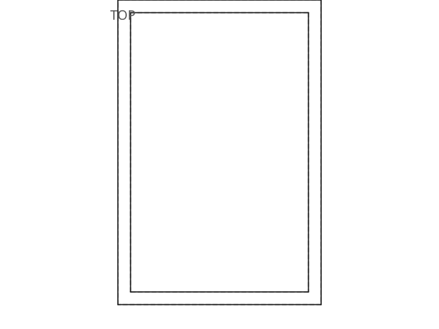
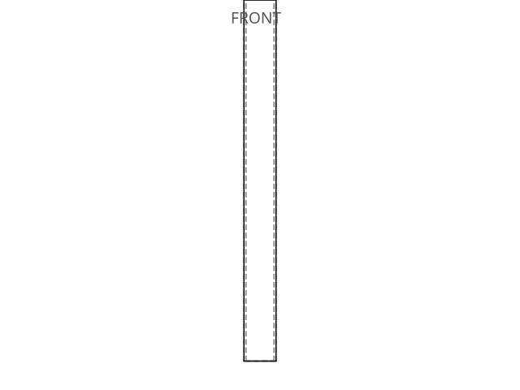

Synthetic RHS profile
profiel unfold successFolded → Unfolded
The CAD solid on the left, the flat blank the unfold probe computed on the right. Drag either viewer to rotate; scroll to zoom.
Folded
As modelled in CAD — the source solid
Unfolded
Flat blank — ready for the laser
Unfold analysis
0
Bends
108000 mm²
Flat area
5.00 mm
Thickness
0.000
Thickness CV
Developable as a single flat panel — no bends were detected, so the blank equals the flat face.
Flags
Technical drawings
iso

top

front

Classification
profiel
2.022
plaat
1.210
anders
0.895
Label
profiel
Confidence
76.8%
Margin
0.811
Quantity
1×
Geometry
Bounding box
900.0 × 120.0 × 80.0 mm
Volume
1710000.0 mm³
Surface area
687800.0 mm²
Aspect ratio
7.50
Thickness ratio
0.089
Geometry source
brep
Hollow
yes
Profile match
Family
RHS
Standard
EN 10210-2
Designation
RHS 120x80x5
Residual
0.00 mm
Confidence
100%